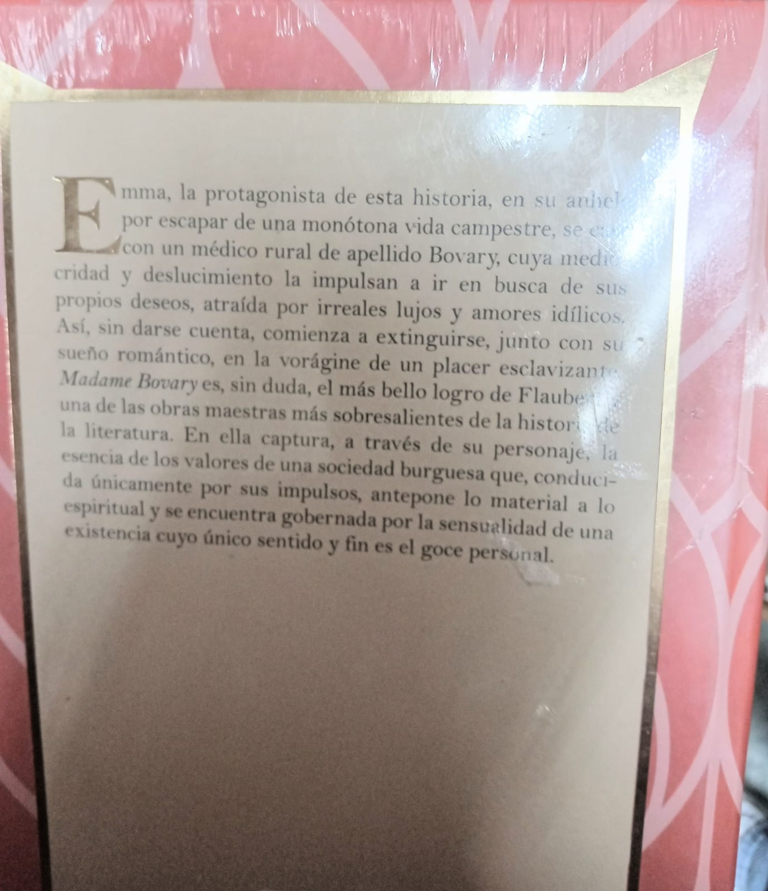
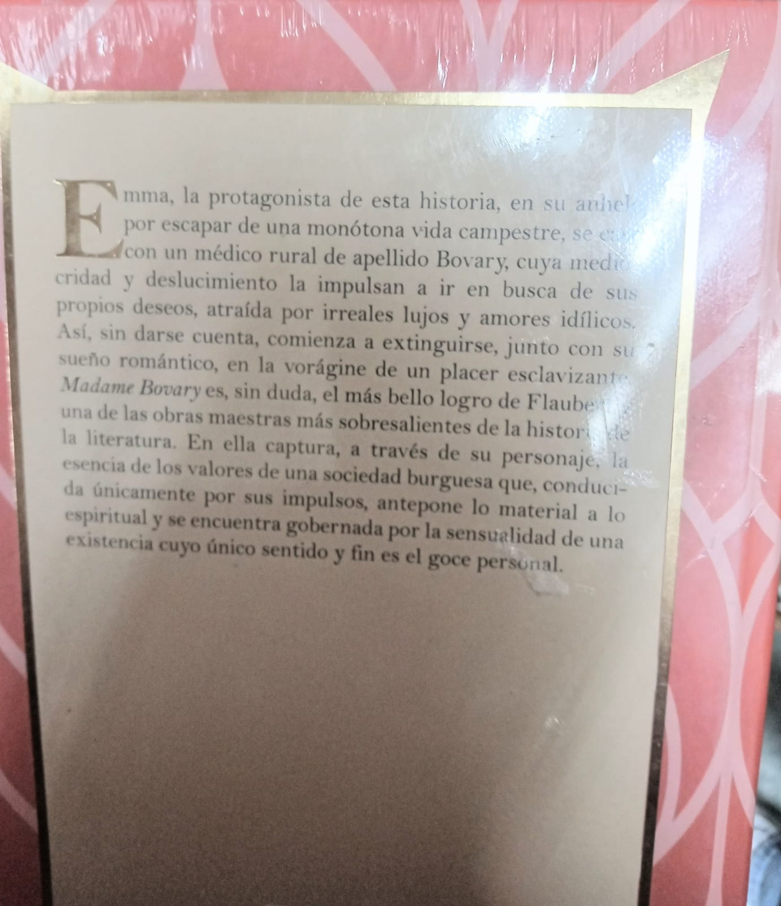

Madame Bovary | Gustave Flaubert
$445.00
Emma ha incubado muchas ilusiones respecto del matrimonio y de la vida, de la que espera aventuras apasionadas. Sin embargo, cuando se casa con el médico Charles Bovary, la realidad será otra. Convertida en Madame Bovary, se encuentra con un marido fiel, pero ausente, puritano, sin carácter ni ambiciones. Ignorada y aburrida, cae enferma y su marido decide llevarla a un poblado llamado Yonville, donde da a luz a su hija Berthe. El farmacéutico del pueblo, alimenta las ambiciones de Emma para sacar provecho económico y político de su relación con el doctor Bovary. La protagonista presiona a su marido para asumir riesgos médicos que le traigan fama. Además, compra compulsivamente cosas de lujo y se sumerge en deudas impagables. Al mismo tiempo, comienza una aventura con un don juan. Madame Bovary cae enferma nuevamente. Para animarla, su ingenuo marido consiente en que asista a clases de piano en Rouen, sin advertir que su propósito era envolverse románticamente con un joven a quien había conocido tiempo atrás. Su mundo se desmorona cuando recibe una orden de embargo y desalojo, y no encuentra ayuda financiera en sus amantes. Desesperada, toma una decision que ca,biara el rumbo de todos.